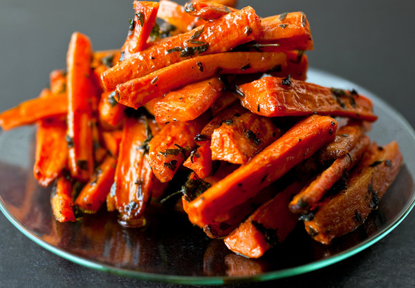

Roasted Carrots

This dish is inspired by a roasted carrot antipasto I recently sampled at Oliveto Cafe in Oakland, Calif. The roasted carrots were tossed with lots of parsley and thyme, and I loved the way those bitter herbs offset the sweetness of the carrots.
2 poundscarrots, peeled quartered or cut into sixths lengthwise depending on the size, then into 2-inch lengths3 tbspextra virgin olive oil- Salt
- freshly ground pepper
- all-purpose seasoning
1 tspteaspoon fresh thyme leaves, chopped½ tsporegano3 tbspfinely chopped flat-leaf parsley
Preheat the oven to 400 degrees. Oil a sheet pan or a baking dish large enough to fit all of the carrots in a single layer. Place the carrots in a large bowl, and toss with the olive oil, salt, pepper, thyme and oregano.
Spread in an even layer in the prepared pan or baking dish. Cover with foil, and place in the oven for 30 minutes. Uncover, and if the carrots are not yet tender, turn the heat down to 375 degrees and return to the oven for 10 to 15 more minutes until tender. Add the parsley, stir gently, and taste and adjust salt and pepper. Serve hot, warm or at room temperature.